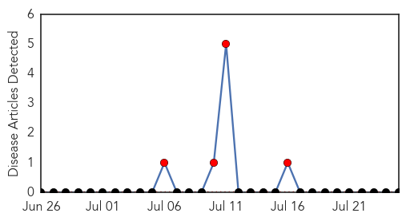
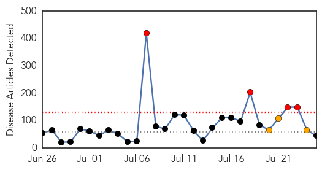

Hemmorhagic Fever
30-Day Web Trend
30 alerts, 0 warnings

30-Day Twitter Trend
0 alerts, 0 warnings

Article Locations

Article Confidences

Top Articles:
-
No articles found for Jul 25, 2014
Top Tweets:
-
No tweets found for Jul 25, 2014
Unknown
30-Day Web Trend
4 alerts, 3 warnings

30-Day Twitter Trend
0 alerts, 0 warnings

Article Locations

Article Confidences

Top Articles:
- 0.971
- Observer
- 0.922
- Encephalitis takes nearly 570 lives; three health officials suspended
- 0.917
- Chicago Tribune
- 0.917
- Chicago Tribune
- 0.917
- Chicago Tribune
- 0.917
- Chicago Tribune
- 0.917
- Chicago Tribune
- 0.917
- Chicago Tribune
- 0.917
- Chicago Tribune
- 0.917
- Chicago Tribune
- 0.917
- Chicago Tribune
- 0.917
- Chicago Tribune
- 0.917
- Chicago Tribune
- 0.917
- Chicago Tribune
- 0.891
- Bengal Encephalitis Toll 113, Mamata Suspends Three Health Officials
- 0.891
- Bengal encephalitis toll 113, Mamata suspends three health officials
- 0.866
- Egypt FM calls for seven-day humanitarian truce in Gaza
- 0.866
- More than 15,000 Russian troops along Ukraine border -U.S. envoy
- 0.866
- Russia says Ukraine shelled across the border with intent to kill law enforcement officers
- 0.822
- Wash produce: 125 sickened by parasite, including in Oregon, in tainted food or water
- 0.800
- Encephalitis toll 111, CM suspends 3 health officials
- 0.800
- Encephalitis toll 111, CM suspends 3 health officials
- 0.783
- Lou Gehrig's Disease Rare, According to New Report
- 0.739
- WHO Calls for Humanitarian Corridor to Transport Gaza's Wounded
- 0.739
- WHO Calls for Humanitarian Corridor to Transport Gaza's Wounded
- 0.702
- Newly-Discovered Ancient Diabetes-Related Gut Virus 'CrAssphage' Lives in Half of World's Population
- 0.697
- Central medical team visits north Bengal
- 0.638
- Farsnews
- 0.637
- WB government suspends 3 health officials
- 0.603
- African swine fever could spread to Poland, warn experts
- 0.590
- WHO seeks to evacuate Gaza wounded
- 0.578
- New gut virus lives in half the world`s population
- 0.575
- Malaria is the leading killer in Central African Republic: aid group
- 0.541
- Doctors say cutbacks are putting lives at risk
- 0.540
- State hospitals run out of vital medicines
- 0.532
- UN health agency seeks Gaza 'humanitarian corridor'
- 0.528
- Too few teens receiving HPV vaccination, CDC says
- 0.527
- Health workers: Philippine healthcare is very sick
- 0.526
- Traditional Indian medicines seized in Sydney
- 0.522
- Newly Discovered Virus Dwells In The Gut Of Half The World's Population
- 0.518
- Malaria is the leading killer in Central African Republic
- 0.515
- Malaria is the leading killer in CAR
- 0.505
- Millennium Development Goal 6: Measuring Progress - World
- 0.501
- Socialist Cuba Exports Health Care, Gains Important Recognition
Top Tweets:
- 0.501
- Messi en juego homenaje a Deco: Se disputó en el estadio do Dagrao, el encuentro amistoso internacional en hom... http://t.co/djgNzfdzF0